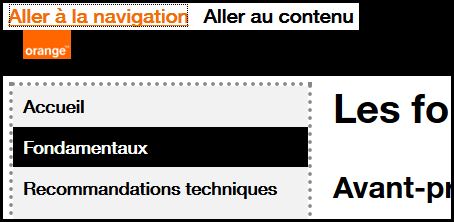

Web designer - Navigation générale
S’assurer que l’utilisateur navigue facilement dans une page et plus globalement dans un site
Libellé des liens et des boutons #
Cible : tout le monde et en particulier les personnes déficientes visuelles, cognitives ou ayant un déficit d’attention.
Quand : lors de la conception du service et lors de la conception graphique.
Description :
Les libellés des liens et des boutons doivent être suffisamment explicites.
Dans les cas exceptionnels où ce n’est techniquement pas possible, prévoir quand même un libellé explicite qui sera utilisé par la synthèse vocale (et les autres technologies d'assistance).
Exemple valide :
« découvrez nos offres »
Exemples non-valides :
« cliquez ici »
« en savoir plus »
Éviter les boites de dialogues et l’ouverture de nouvelles fenêtres #
Cible : les seniors, les personnes déficientes cognitives, malvoyantes ou en mobilité.
Quand : lors de la conception et lors du développement.
Description :
Éviter autant que possible les actions qui ouvrent une nouvelle fenêtre (ou un nouvel onglet) du navigateur. Si un lien déclenche l’ouverture d’une nouvelle fenêtre, il faudra lors du développement faire en sorte que le texte « nouvelle fenêtre » soit vocalisé par les lecteurs d’écran, afin que les personnes malvoyantes sachent qu’une nouvelle fenêtre s’ouvre.
De même, éviter le recours systématique aux boîtes de dialogue pour présenter des informations dans les pages (présentation du service …). Elles doivent être réservées à une information importante qui requiert une attention immédiate et rester de taille réduite.
Ces fenêtres modales ou pop-in posent souvent des problèmes d’accessibilité pour les personnes qui naviguent au clavier ou au lecteur d’écran, problèmes qui nécessiteront une attention particulière lors de la phase de développement.
Exemple non-valide :
Dans l’exemple ci-dessous le recours à une boîte de dialogue n’est pas justifié. L’utilisation d’une page web standard permettrait :
- de laisser plus d’espace au contenu (en supprimant les marges autour de la boite de dialogue),
- de pouvoir utiliser le bouton « Précédent » du navigateur pour revenir en arrière lors de la navigation entre les différentes pages de la boite de dialogue,
- de faciliter l’affichage sur les petits écrans,
- d’éviter des problèmes d’accessibilité pour les personnes qui naviguent à l’aide du clavier ou à l’aide d’un lecteur d’écran,
- d’alléger le poids de la page et le temps de chargement, car dans cet exemple la page derrière la boite de dialogue doit être chargée.

Fournir des liens d’évitement #
Cible : utile pour les utilisateurs de mobile et tablette, les personnes déficientes visuelles et les personnes souffrant de handicap moteur ou en mobilité.
Quand : dès la phase de conception et lors du développement.
Description :
Fournir des liens d’évitement du type « Aller au contenu » sur chaque page. Ceux-ci facilitent la navigation pour les personnes utilisant le clavier, en mobilité ou navigant à l’aide d’un lecteur d’écran. En cas de fortes contraintes, les liens peuvent être masqués à l’écran et apparaître uniquement lors de la navigation au clavier.
Exemple :
Des liens d’évitement (« Aller à la navigation », « Aller au contenu ») sont disponibles sur ce site.
Pour les faire apparaître, placer le focus en haut de la page en cliquant sur la barre d’adresse de votre navigateur par exemple, puis appuyer plusieurs fois sur la touche Tab.

Permettre le contrôle des animations #
Cible : les personnes malvoyantes, les personnes éprouvant des difficultés de lecture, d’attention ou de compréhension, les personnes épileptiques.
Quand : lors de la conception du service et lors de la conception graphique.
Description :
Tout contenu en mouvement, mis à jour automatiquement, clignotant ou en défilement doit pouvoir être stoppé, caché ou mis en pause par l’utilisateur si cette animation dure plus de 5 secondes.
Par ailleurs, éviter autant que possible les flashs lumineux et les changements brusques de luminosité (cf. Le logo des JO provoque des crises d’épilepsie).
Exemple :

Un carrousel qui défile automatiquement doit se mettre en pause au survol de la souris ou lorsqu’il reçoit le focus.
Il est également possible d’ajouter un bouton « pause » directement dans l’interface.
Situer explicitement la page dans le site et fournir plusieurs moyens d'y accéder #
Cible : tout le monde et en particulier les personnes déficientes visuelles ou cognitives.
Quand : lors de la conception.
Description :
Donner à l’utilisateur plusieurs moyens de situer et accéder à un contenu spécifique, localiser la page Web en cours de consultation dans un ensemble de pages. Lorsque la page est une étape dans un processus où les pages s’enchaînent les unes après les autres, ce critère peut être ignoré.
À vérifier :
S’assurer que plusieurs systèmes permettent de situer et accéder à une page ou un contenu dans le site : un outil de recherche sur l’ensemble du site, un plan du site, un menu de navigation global, un fil d’Ariane…
Exemple valide :
Le site propose, à la fois, une navigation principale complète et précise et un fil d’Ariane.
Exemple invalide :
Une application offre un menu de navigation parcellaire et aucun autre moyen pour l’utilisateur de s’orienter dans les pages ou de repérer où se situe la page courante dans l’arborescence.
S'assurer que les éléments d'aide sont placés dans le même ordre relatif sur les pages qui les intègrent. #
Cible : tout le monde, en particulier les personnes ayant une déficience visuelle, des troubles cognitifs ou perte de mémoire, afin de faciliter l'accès à l'aide sur un site ou une application.
Quand : lors de la conception.
Description :
Les éléments d'aide doivent être positionnés aux mêmes endroits et dans le même ordre relatif (i.e., par rapport aux autres éléments de contenu des pages) sur toutes les pages où ils sont présents.
Par exemple, dans le cas d’un en-tête commun, seul l'ordre relatif du contenu présent dans l'en-tête et sur toutes les pages contenant le mécanisme d'aide, doit être pris en compte.
Sont considérés comme éléments d'aide :
- Les coordonnées permettant de contacter une personne : email, adresse, téléphone, heures d'ouverture.
- Les mécanismes permettant de contacter une personne : Chat client, formulaire de contact, lien de redirection vers une aide externe (réseau social ou autre).
- Les options d'aide en autonomie : FAQ, lien selfcare, page d'assistance, etc.
- Les systèmes de contact entièrement automatisés : chatbot, etc.
Ce critère n'impose pas la présence de mécanismes d'aide mais seulement de vérifier, quand ils sont présents, que leur positionnement relatif est le même sur les différents pages du site ou de l'application.
Si la structure des pages est modifiée selon les profils d'utilisation (par exemple profil visiteur ou profil connecté), il convient de faire la vérification pour chaque profil.
Bonne pratique : si possible l'ordre visuel doit être aussi respecté.
À vérifier :
- Identifier la présence répétée d'éléments d'aide sur différentes pages.
- Les éléments d'aides apparaissent dans le même ordre RELATIF : tout autre contenu présent dans l'ensemble des pages Web et situé avant l'élément d'aide doit se trouver avant l'élément d'aide sur cette page. Les éléments qui se trouvent après l'élément d'aide sur d'autres pages doivent être après l'élément d'aide sur cette page.
- Revérifier les points précédents pour chaque mode d'affichage (profils d'utilisation, point de rupture CSS en web, mode portait/paysage sur mobile).
NB : Si l'ordre visuel diffère de l'ordre relatif, alors une attention particulière sera accordée aux critères 1.3.2 Ordre séquentiel logique et 2.4.3 Parcours du focus.
Exceptions :
- Conforme : Un élément n'est pas positionné visuellement et exactement au même endroit mais pourtant dans le même ordre (selon le code source) par rapport aux autres éléments communs de la page.
- Conforme : Le repositionnement des éléments d'aide est engendré par un changement d'affichage à l'initiative de l'utilisateur (changement d'orientation, de résolution de la page, activation du zoom, etc.).
- Conforme : Un élément comme un lien promotionnel ad-hoc, qui n'apparaît que sur une seule page et modifie l'ordre relatif du mécanisme d'aide sur cette seule page, peut être ignoré.
- Non-applicable : Des pages qui n'auraient rien à voir d'un point de vue visuel et fonctionnel (exemple : sur un site de e-commerce, lors du processus de paiement, le template peut changer et la page de paiement est fonctionnellement et visuellement totalement différente).
Objectif utilisateur :
Permettre aux utilisateurs de retrouver facilement les éléments d'aides sur un site ou une application.
Exemple valide :
Un bouton de support par chatbot est toujours présent au même endroit sur les différentes pages.
Exemple non valide :
Une liste de coordonnées placés dans un footer ou un menu dont les éléments sont ordonnés différemment d'une page à l'autre.
Référence WCAG :
3.2.6 Consistent Help